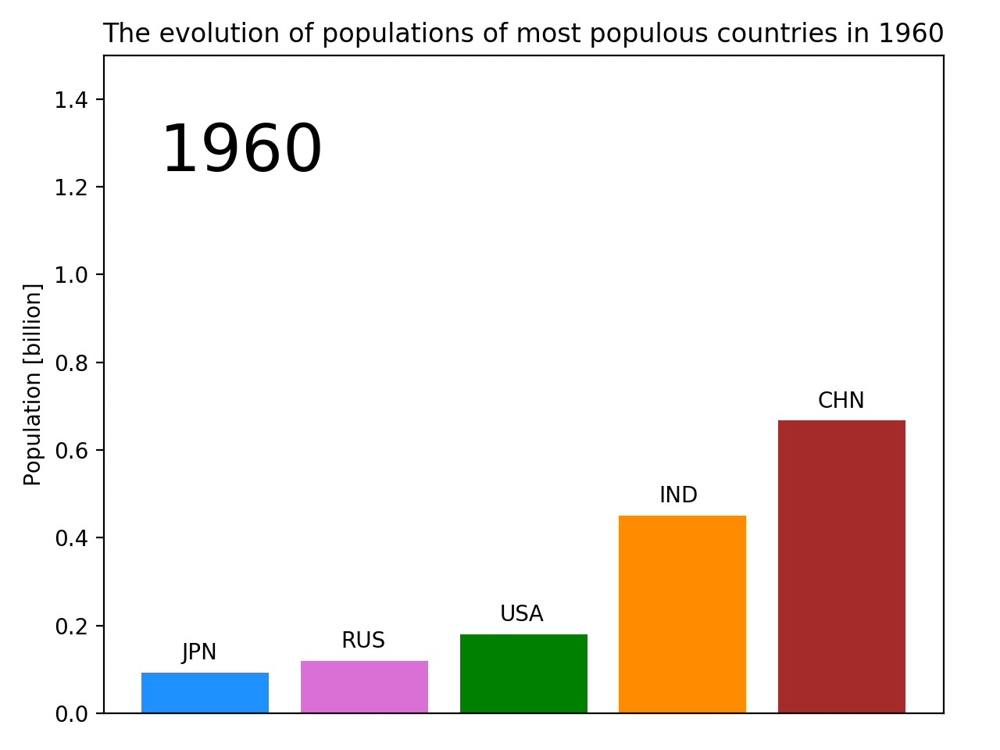
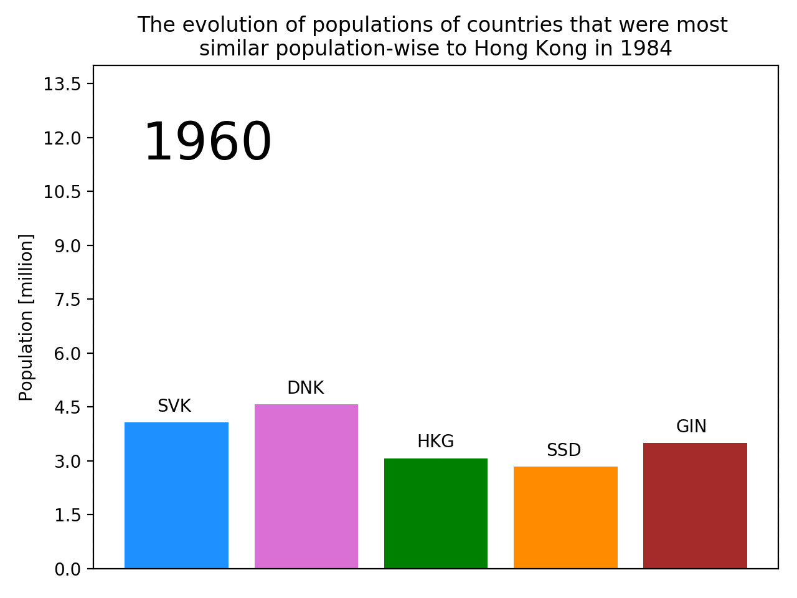
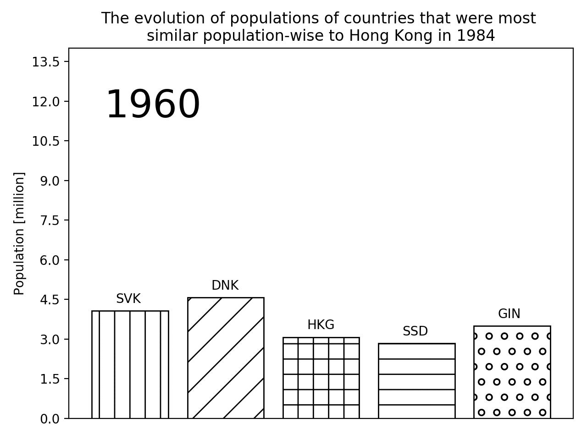
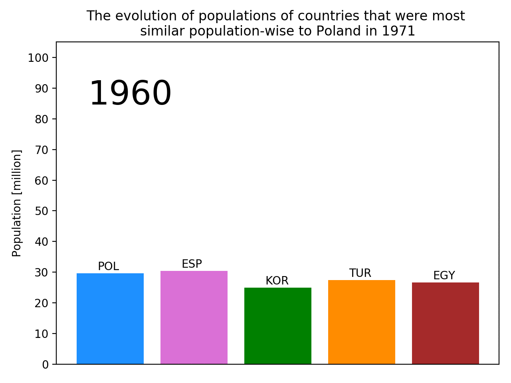
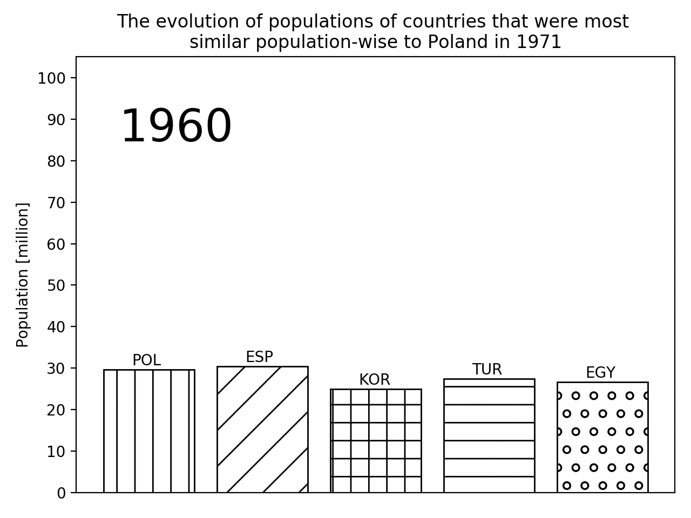
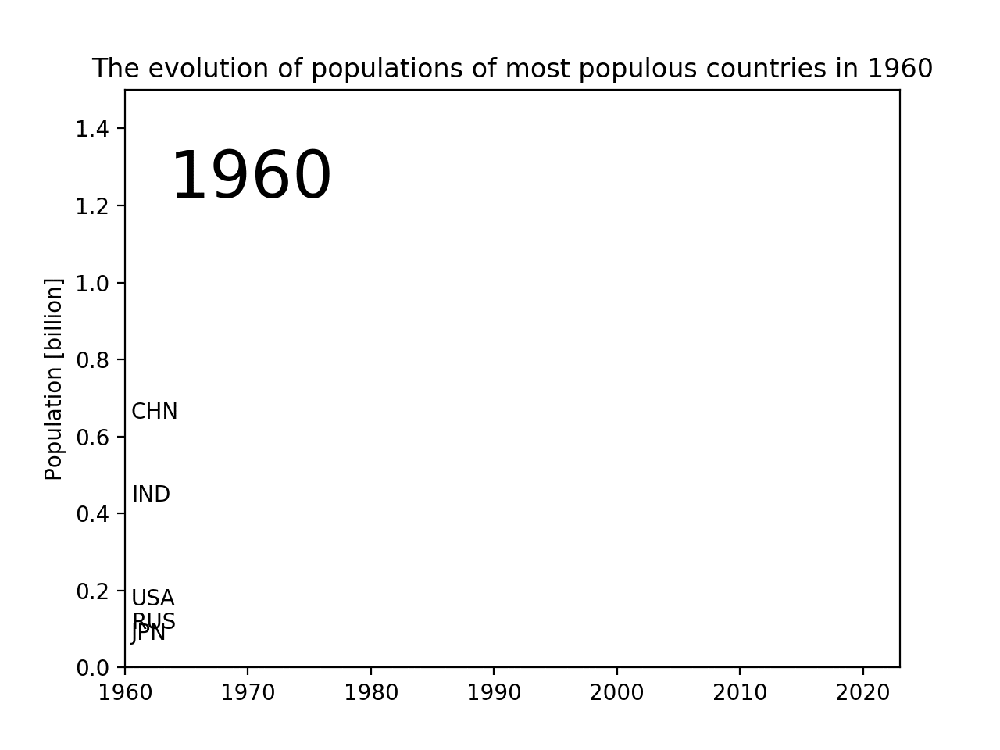
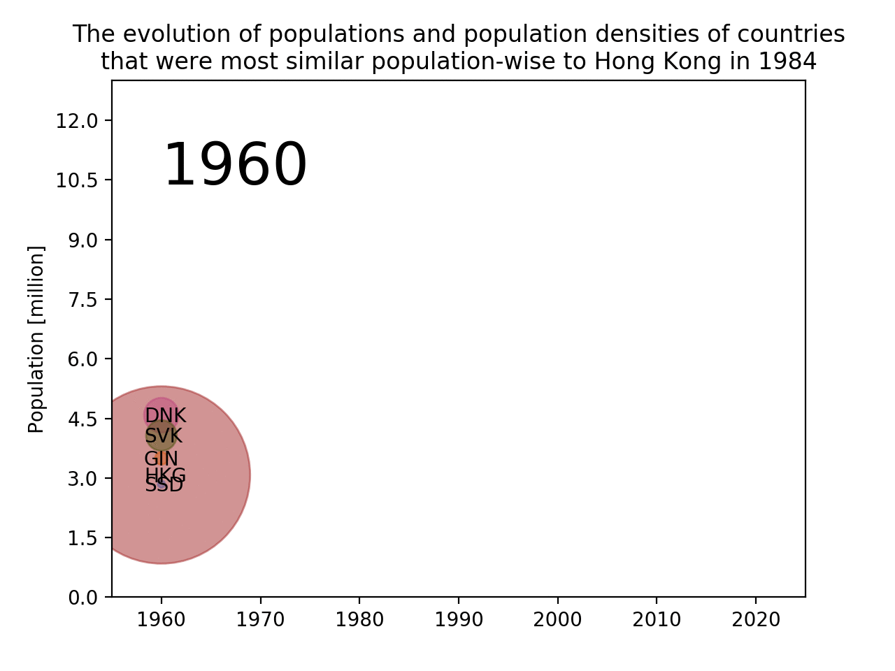
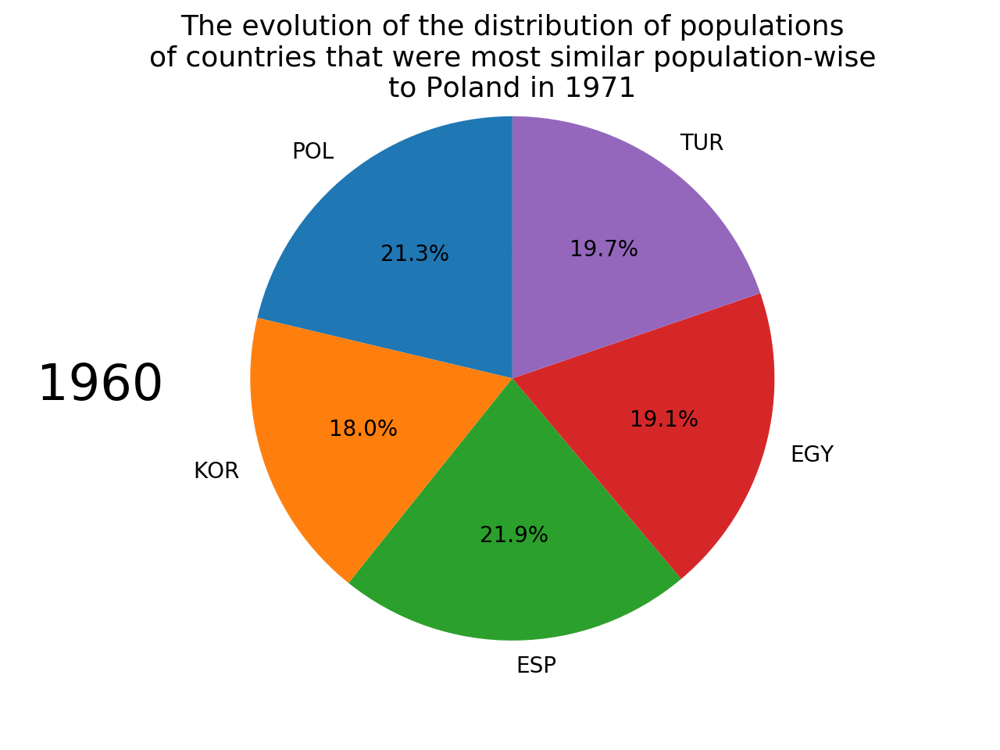
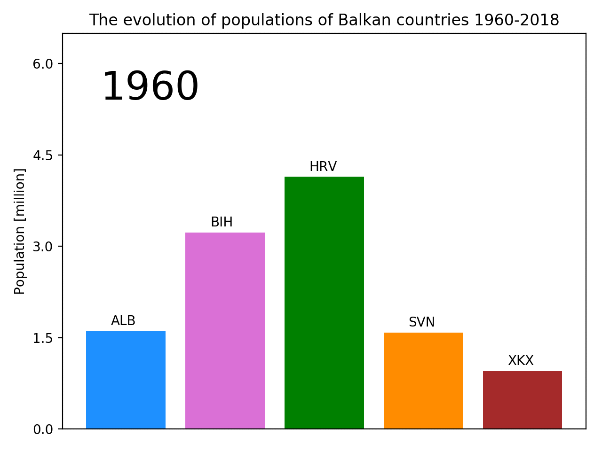

The following plot shows the evolution of populations of most populous countries in 1960. [COLOURED VERSION]
The following plot shows the evolution of populations of most populous countries in 1960. [BLACK&WHITE VERSION]

The following plot shows the evolution of populations of a random country (Hong Kong) and 4 other closest population-wise countries in a random year (1984). [COLOURED VERSION]
The following plot shows the evolution of populations of a random country (Hong Kong) and 4 other closest population-wise countries in a random year (1984). [BLACK&WHITE VERSION]
The following plot shows the evolution of populations of Poland and 4 other closest population-wise countries in a random year (1971). [COLOURED VERSION]
The following plot shows the evolution of populations of Poland and 4 other closest population-wise countries in a random year (1971). [BLACK&WHITE VERSION]
The following plot shows the evolution of populations of most populous countries in 1960. [LINE PLOT VERSION]
The following plot shows the evolution of populations of a random country (Hong Kong) and 4 other closest population-wise countries in a random year (1984). [BUBBLE PLOT VERSION]
The following plot shows the evolution of the distribution of populations of Poland and 4 other closest population-wise countries in a random year (1971). [PIE PLOT VERSION]
The following plot shows the evolution of populations of Balkan countries. [BAR PLOT VERSION]
